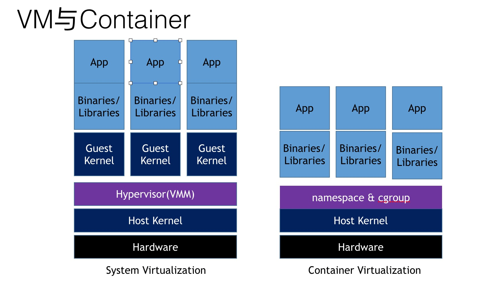
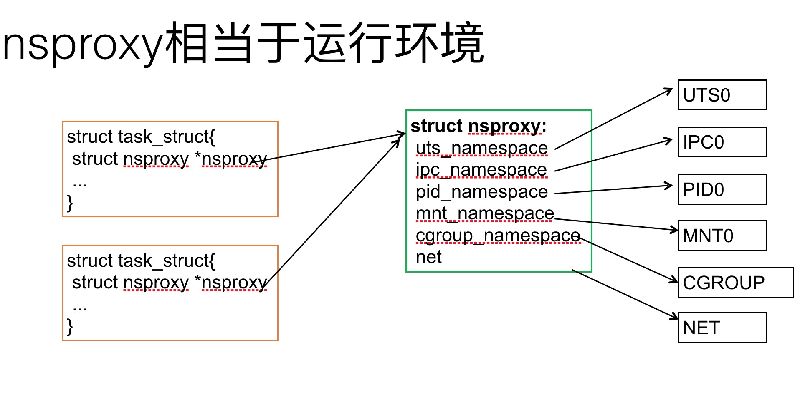
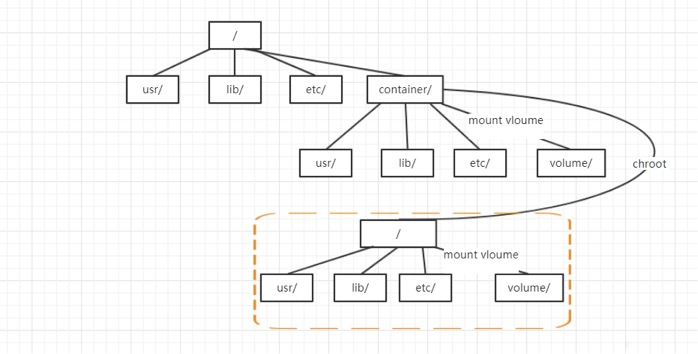
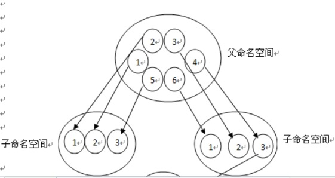
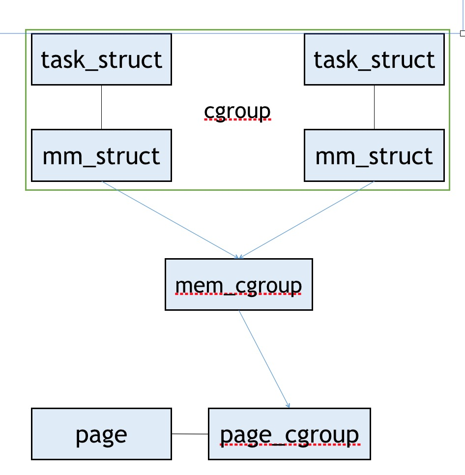
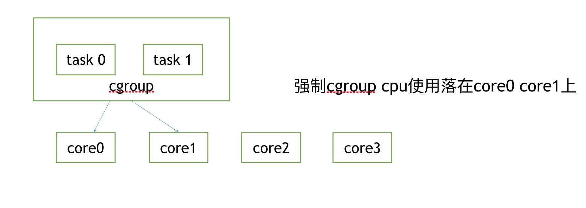
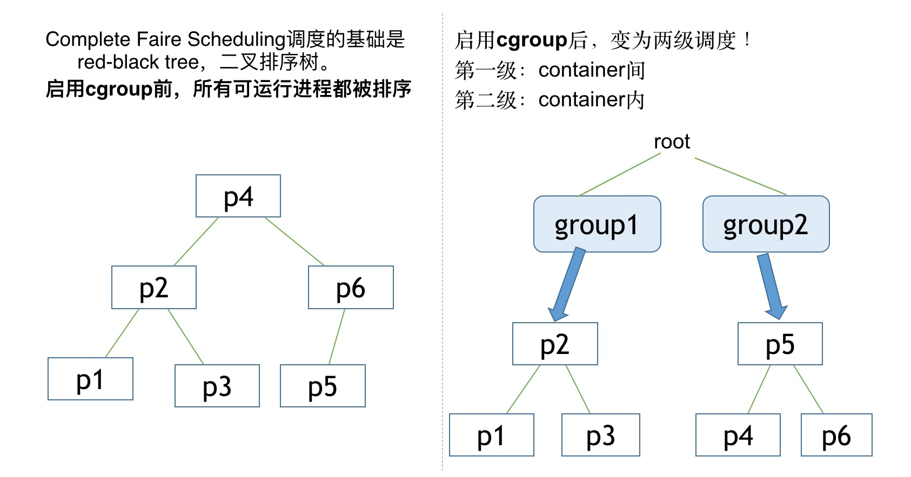

vm vs 容器
vm的虚拟化方式是采用hypervisor 实现硬件的资源的隔离调度，每个vm都有独立的内核，容器实现的虚拟化方式是通过操作系统的namespace + cgroup机制实现虚拟化

运行一个进程需要的环境
VFS mount, 即文件系统rootfs
uid, gid
network, 即独立的网络设备和tcpip
pid, 父pid
devices, hostinfo, IPC, /proc, /sys
操作系统提供了namespace + cgroup，实现进程环境的虚拟化

namespace提供进程运行的视图隔离
pid namespace：进程ID
mnt namespace：文件系统挂载点
net namespace：网络栈
uts namespace：主机名
ipc namespace：进程间通信
user namespace：uid, gid 映射，capabilities 内核3.8启用
cgroup namespace 内核4.6 docker未支持
mnt namespace
mnt namespace为进程提供独立的文件系统视图，新的mnt ns是一份父mnt ns的拷贝， 但是在子进程中调用mount安装的文件系统，将独立于父进程的mnt ns，只出现在新的mnt ns上,加上chroot，可以虚拟一个独立的文件系统

PID namespace
PID namespace为进程提供独立的pid视图，在特定的pid namespace下面只能看到所属改pid namespace的进程，namespace内的进程虚拟的pid 由0开始分配，独立于宿主机的pid，每个namespace的pid 互相独立

network namespace
network namespace 是实现网络虚拟化的重要功能，它能创建多个隔离的网络空间，它们有独自的网络栈信息,每一个ns私有的网络设备
- lo, veth等虚设备
- 物理网卡
- 独立的协议栈
- ipv4, ipv6（含IP地址和路由表）
- tcp, sctp, dccp
- iptables规则
- ipvs等
由于namespace之前互相独立，所以namespace网络互通采用veth pair veth pair 当做是双向的 pipe（管道），从一个方向发送的网络数据，可以直接被另外一端接收到；
其他ns…
uts namepace 提供独立的host info， ipc namepace ，提供独立的ipc， user namespace 映射容器与母机用户id
namesapce 提供了进程运行环境的基本隔离，但是无法提供资源使用隔离
独立的mnt
独立的pid
独立的net
独立的uts
独立的cgroup视图
独立的ips
cgroup
cgroups 是Linux内核提供的一种可以限制单个进程或者多个进程所使用资源的机制，可以对 cpu，内存等资源实现精细化的控制
cpu 子系统，主要限制进程的 cpu 使用率。
cpuacct 子系统，可以统计 cgroups 中的进程的 cpu 使用报告。
cpuset 子系统，可以为 cgroups 中的进程分配单独的 cpu 节点或者内存节点。
memory 子系统，可以限制进程的 memory 使用量。
blkio 子系统，可以限制进程的块设备 io。
devices 子系统，可以控制进程能够访问某些设备。
net_cls 子系统，可以标记 cgroups 中进程的网络数据包，然后可以使用 tc 模块（traffic control）对数据包进行控制。
freezer 子系统，可以挂起或者恢复 cgroups 中的进程。
ns 子系统，可以使不同 cgroups 下面的进程使用不同的 namespace
memory
memory 子系统控制并统计了cgroup下面进程的memory使用，大概结构如下
属于同一个cgroup的进程分配内存都通过mem_cgroup这个结构体进行分配

cpu
cpuset 子系统，可以为 cgroups 中的进程分配单独的 cpu 节点或者内存节点。通过控制使用的cpu个数 可以控制cgroup进程组cpu最大的使用资源

cpu 子系统，主要限制进程的cpu的使用时间，从而控制cpu的最大使用资源
目前有两种调度机制，cfs和rt
cpu.cfs_quota_us：每个周期 cgroup 中所有任务能使用的 CPU 时间
cpu.cfs_period_us：每个周期中 cgroup 任务可以使用的时间周期
cpu.rt_period_us：设置一个周期时间，表示多久 cgroup 能够重新分配 CPU 资源
cpu.rt_runtime_us：设置运行时间，表示在周期时间内 cgroup 中任务能访问 CPU 的时间。这个限制是针对单个 CPU 核数的，如果是多核，需要乘以对应的核数

blkio
限制磁盘的资源使用
第一种策略是是按比例加权划分磁盘时间
用于cfq（cfq 完全公平调度策略 每个进程都有一个同步IO调度队列，并默认以时间片和请求数限定的方式分配IO资源，以此保证每个进程的IO资源占用是公平的，cfq还实现了针对进程级别的优先级调度） 这个策略只在磁盘为cfq 策略下生效
第二种策略是限制io上限的策略 这个策略是在通用块层实现的，可以用于叶节点以及更高级别的逻辑设备
net
net_cls 子系统使用等级识别符（classid）标记网络数据包，这让 Linux 流量管控器（tc）可以识别从特定 cgroup 中生成的数据包。可配置流量管控器，让其为不同 cgroup 中的数据包设定不同的优先级
cgroup + namespace能做到资源使用和可视化的隔离
但是由于cgroup namepace的不完善，不能做到进程所使用的资源完全的隔离，如devcie procfs的隔离，磁盘使用容量的隔离
容器镜像
如果每个镜像都独立的话，如一个centos jdk8的镜像要250M,那么容器所占用的磁盘资源是非常大的，所以docker 镜像采用Union Filesystem，减少容器占用的磁盘空间，union filesystem能把几个独立的文件夹联合起来，挂载到一个目录下，提供cow机制，对于未修改的文件，多个镜像共用，修改的文件单独复制到自己的文件目录下并修改，改善了镜像磁盘的资源占用
others
现在容器貌似是个大潮流，但是由于naespace + cgroup的不成熟服务容器化的坑远比vm上的多得多，一旦决定容器话，必须要有做好踩坑的准备。
我觉得容器能带来的最大的好处是强力的扩缩容的能力，以及搭配k8带来的的服务编排能力。是不是一定要上容器还是要看这两点，毕竟容器还不完善，盲目的容器化会付出代价的